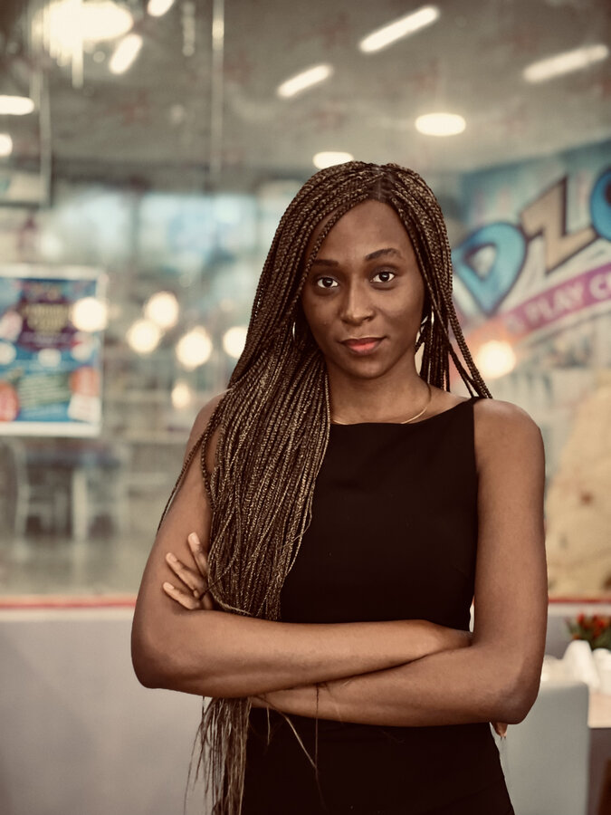

I help organizations turn ideas into meaningful audience connections through strategic communication, marketing, and visual storytelling. By combining research, creativity, and data-informed decision-making, I develop communication strategies that strengthen brands and engage communities across higher education and beyond.

"Passionate about communication research, reputation management, AI, and strategic communication."
Vivian is a strategic communications and marketing professional with experience developing communication strategies, strengthening institutional brands, and translating complex research into compelling public stories. She builds communication systems, leads digital engagement initiatives, creates audience-centered campaigns, and evaluates communication performance using analytics and strategic insight.
Her track record spans higher education, technology, and nonprofit organizations — through institutional storytelling, stakeholder engagement, brand management, and multimedia communications.
The challenge. OVS had no defined digital communications framework — no consistent visual identity, no editorial planning process, and no reliable way to track what was actually working for the military-connected students it served.
What I did. I built the department's communications framework from the ground up: a semester communication strategy, standardized editorial workflows, and a branded visual identity system with reusable templates and assets. I launched OVS's LinkedIn presence, implemented a centralized SharePoint repository so campaign materials and brand assets were easy to find, and developed communication assessment dashboards with KPI tracking so decisions could be data-informed going forward.
Consistent, data-informed communication practices across the department, and a new institutional presence for OVS on LinkedIn.
The challenge. ICAT needed to translate interdisciplinary research and faculty achievement into content that resonates with public, academic, and industry audiences — and prove that organic, non-paid content could still move the needle.
What I did. I developed and executed a digital communications strategy across LinkedIn, Facebook, and Instagram, planning editorial calendars around faculty spotlights, research features, and campus events. I produced original photography, video, and written content, then closed the loop with quarterly performance analysis and strategic recommendations for the next cycle.
The challenge. Turn a personal podcast into a recognizable media brand — not a one-off show — with a voice and format consistent enough to hold an audience across very different subjects, from personal storytelling to hard conversations to expert interviews.
The strategy. I deliberately mix content types under one consistent identity: personal storytelling episodes ("24!", "What Love is Not"), issue-driven conversations ("Domestic Violence Still a Menace," "Life with Sickle Cell," "Depression and Mental Health"), and expert interviews ("18 Minutes with a Graphics Design Expert"). The range is the strategy — it positions Everything Viva as a brand built on honest conversation rather than a single content niche, which keeps the audience coming back regardless of topic.
What I do. I research, script, host, and produce every episode myself — guest booking, interviewing, audio editing, and sound design — and manage distribution end to end.
An independent media brand, self-produced since 2021, spanning storytelling, journalism-adjacent interviews, and issue-driven conversation.
Listen on Spotify ↗Everything Viva — a podcast on storytelling, conversation, and audience engagement. Listen to all episodes ↗
Watch on Google Drive ↗
Watch on YouTube ↗
Watch on YouTube ↗
Watch on YouTube ↗